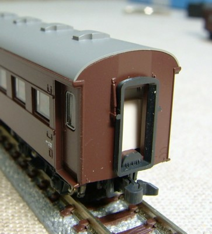

屋根&妻面 |

|
 |

|
|
|
1〜693は、丸屋根となっています。 屋根はキャンバス屋根・丸屋根という旧型客車の標準のスタイルです。 模型はKATOの標準型そのまま。 ただし、張り上げ屋根やノーシル・ノーヘッダなど、多数の試作車が存在しています |
戦後製となる700以降は、車端部の屋根の絞り折妻となりまる。
このうち 700〜1159は車端部にかけて屋根が絞られている通称
"絞り折妻"をしています。KATOの戦後型がこの形態です。 基本は鋼板屋根ですが、一部キャンバス屋根も存在します。 |
1160〜1307は、車端部にかけての屋根の絞りがなくなり、通称
"キノコ折妻"となります。こちらもキャンバス屋根と鋼板屋根の
2種が存在します。 台車違いで登場しているスハ42・オハ36・スハ40もこの形態です。 写真は鋼板屋根のタイプ。キャンバス押さえがありません。KATO オハフ33から改造しました。 |
同、キャンバス屋根のタイプです。 こちらもKATO オハフ33から。イエロートレインのキャンバス押さえを接着しています。 |
車体 |

|
|
| 戦前の標準型は、車体にリベットが並びます。 |
戦前型でも、550〜693は車体が全溶接となり、 リベットが無いすっきりした車体になっています。 KATOの標準型からリベットを削って作りました。 |
台車 |

|
標準的なTR23です。戦前型が履いています。 |

|
TR23の中には、ころ軸受けのTR23G(*1)を付けているものがありました。 (*1) ×TR23H(2013/09/26訂正。TR23Hはオハ47でした) |

|
700〜の戦後型は、ころ軸受けのTR34となります。 なぜかKATOのオハ35戦後型の台車はTR23Gとなってるんですが… |
|
オハ35型の戦後型に続き、スハ42が製造されました。 車体はオハ35戦後型(キノコ折妻)で、台車がTR40となります。 (※写真はTR47。TR40は板バネが4連です) オハ36はスハ42を軽量化したもの、 そのオハ36に電暖を取り付け再び重くなったのがスハ40です。 |